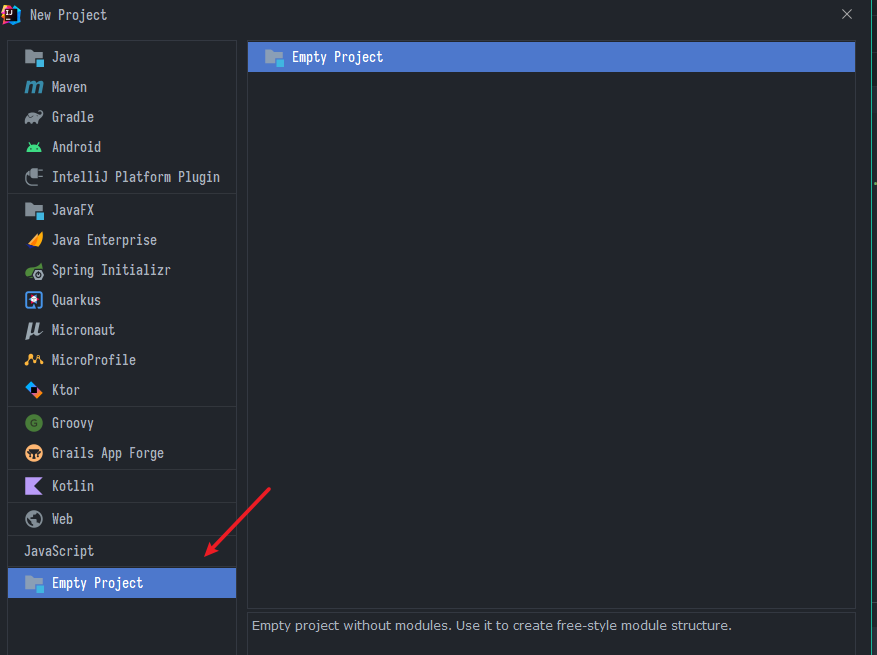
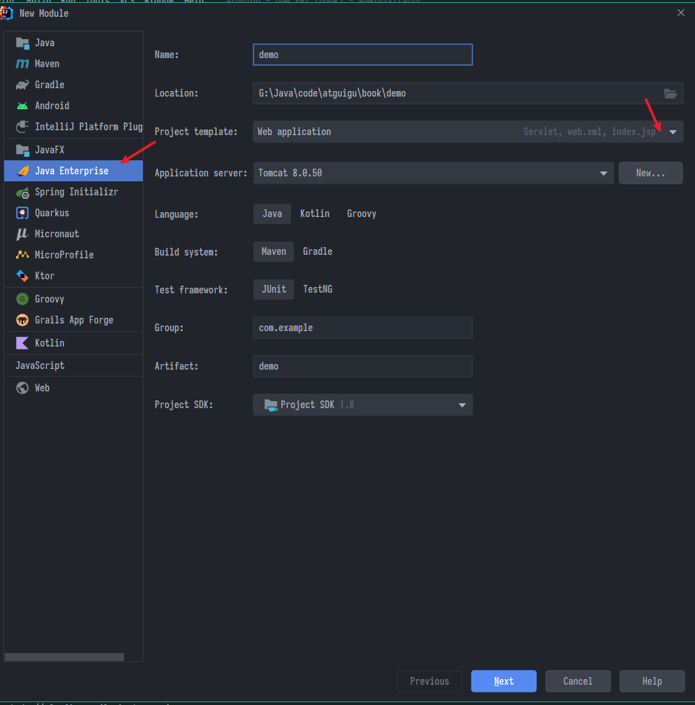
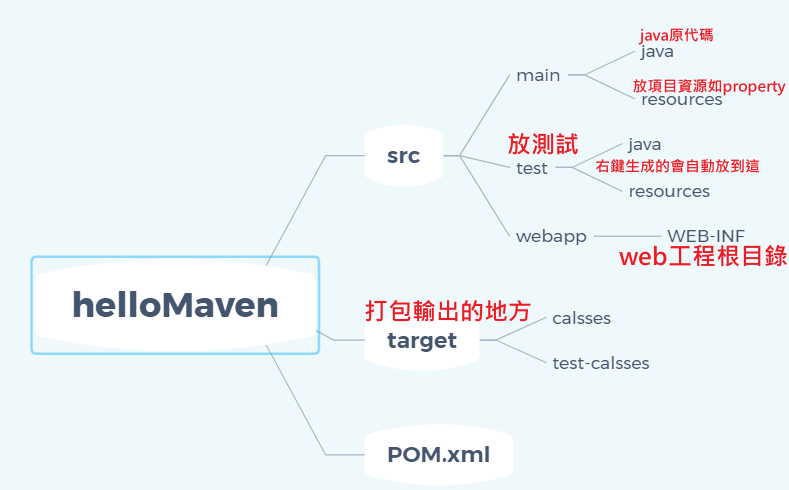
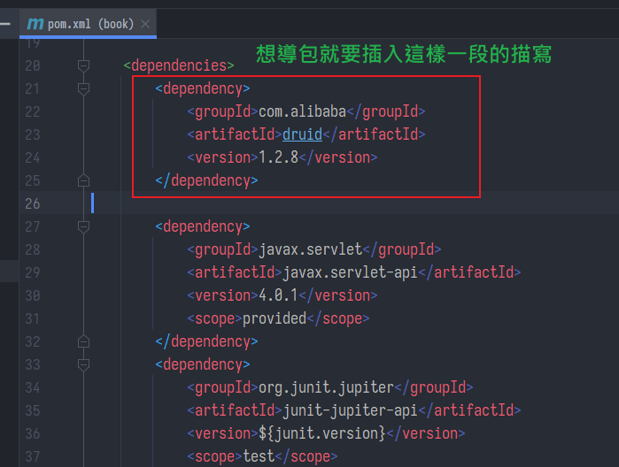
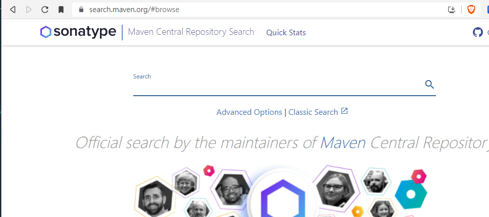
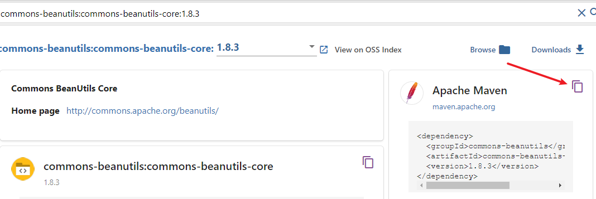
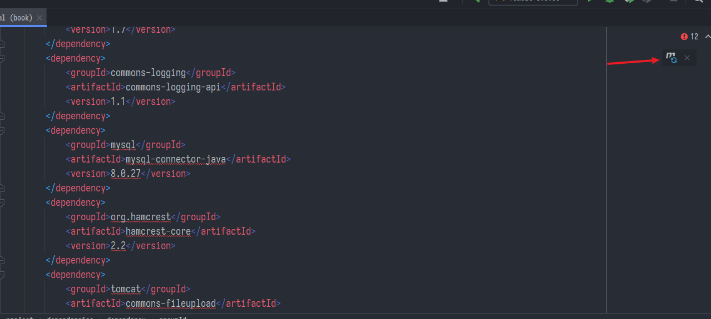

Maven管理依賴
-
傳統作法是建一個lib資料夾然後手動引入
-
項目越多就越麻煩，打包的時候還要注意引用的有沒有包到
專案重構
把專案整個重構，可以先把src下做的那些頁面跟java檔複製出來
-
第一層最好先造一個空的專案方便命名與分類
- 如果直接拿第一層的project當同名的module用，我的IDEA偶爾會有奇怪的BUG，生出兩個同名的module
- 後來知道原因了，就是模組根目錄下的.iml檔案裡面有重復的句子導致，備份後把它刪了讓IDEA重創一份就可
-
我這邊放尚硅谷課程的練習，所以project就叫atguigu

- 因為是空的專案，進去之後IDEA馬上會叫你建一個Module，選javaEE，模板選到webapp

-
如果不想重造，在專案設定 > Facets
- 右上設定部屬的描述檔案，就是那些web.xml之類
- 右下決定資源根目錄，如果顯示紅字可以點它自動生成
-
由於管理選的maven，造出來會自帶一個pom.xml，這個就是maven的設定檔，一個maven專案的標準目錄結構是這樣

- 點開
pom.xml，裡面有一些描述，往下拉到<dependencies>標籤，在這邊告知項目要引用那些包

- 不像
golang在終端輸入go get xxx就完事，maven導包需要寫標籤代碼，但還是能偷懶的，點開中央庫搜尋頁面 https://search.maven.org/#browse

- 查到想要找的包，對他一通按，點進去要引用的版本

- 看到右邊，貼心的代碼已經準備好了

- 愉快的一頓複製貼上之後，回到IDEA刷新maven，他會把這些從中央倉庫引用的jar包下載一份到(預設是我的文件中.m2資料夾)放好
- 所以第一次可能會比較久一點

- 之後有引用都是同理，從此不需要手動把jar包放進lib目錄，部屬打包的時候它也會自動去準備配菜
路徑優化
- 現在Servlet用註解方式引用，解放了
web.xml - 前端頁面用共通的
head.jsp指定了動態的basePath，跳轉主頁的引用直接留空就是指向basePath，例如:
<a href="">跳轉主頁</a>
<!-- 注意不是"/"，如果用/會回到http://localhost:8080/ -->
- 綜合以上，tomcat的部屬就不需要修改部屬的地址
book_war_exploded/那些了
BeanUtils
- 用於把前端拿到的參數map，透過反射直接塞進一個bean物件，但是要注意一個字都不能差，大小寫都要對
- 他賦參數是透過set方法，前面講過bean物件一定要提供set，如果沒有set會失敗
String username=request.getParameter("username");
String password=request.getParameter("password");
String email=request.getParameter("email");
String code=request.getParameter("code");
User user = new User();
BeanUtils.populate(user,request.getParameterMap());
- 比如這邊如果沒有特別需要使用參數去驗證啥的，
String username那些都可以省略掉，反正收到ParameterMap就塞成一個bean，完事
圖書模塊
書城項目中有關書籍後台的部分，以MVC模式劃分
Model部分
相當於資料層+業務邏輯層
JavaBean
pojo與dao包與他們的Impl實現類
- 建立資料庫表、決定需要那些欄位、設定約束
- 建立pojo，也就是對應的bean
- 建立Dao接口(xxxDao)，列出需要與資料庫互動的功能
- 實現接口
(XxxDaoImpl extends BaseDao implements XxxDao)，實際寫出sql語句、操作資料庫 - 測試，造一個
private XxxDao xxxDao =new XxxDaoImpl()調用看看功能
重點筆記
- book的bean
// 預設的圖片
private String imgPath="static/img/default.jpg";
// 在有參構造器與set加入一個判斷
// 如果上傳的是空則不給賦，讓它顯示預設的圖片路徑
if (imgPath!=null && !"".equals(imgPath)){
this.imgPath = imgPath;
}
- BookDaoImpl
關於書的路徑，pojo叫imgPath，資料庫裡叫img_path
之前寫的queryForOne方法，其中調用的queryRunner.query(conn,sql,new BeanHandler<T>(tClass),args)
這個BeanHandler將查到的資料填充bean的方法是用查詢到結果的欄位名去反射賦值
所以sql必須要起別名img_path imgPath
"select id, name, author, price, sales, stock, img_path imgPath from t_book where id=?"
測試的時候因為sql語句換行導致了一些bug，排查了好久，記住這個教訓
String sql="語句"最好不要換行
Service包
- 建立Service接口(
XxxService)，列出前端需要的業務功能(如登入、增刪改查…等等)- 這邊方法的返回值最好是boolean或int，方便判斷是否成功
- 實現接口
XxxServiceImpl implements XxxService- 造一個它的Dao實例物件
private XxxDao xxxDao =new XxxDaoImpl() - 用此Dao實例物件調用它的方法間接與資料庫互動，這步非常輕鬆只是套層皮而已
- 造一個它的Dao實例物件
Controller部分
處理請求、轉發，即是在web包下的XxxServlet.java
- 建立Servlet(
XxxServlet)，接收參數- 造一個它的Service實例物件
private XxxService xxxService = new XxxServiceImpl() - 用此Service實例物件，配合接收到的請求與參數，完成業務邏輯，將結果用JSP或
request.setAttribute("msg","錯誤代碼")之類的方法回傳給前端
- 造一個它的Service實例物件
doGet偷雞
- 在doGet裡面放一個doPost，不管來哪種請求，反正都看action標籤來決定調用的方法
- 由於是繼承BaseServlet中的方法，IDEA新造的XxxServlet預設是繼承httpServlet記得修改
protected void doGet(HttpServletRequest request, HttpServletResponse response) throws ServletException,
IOException {
doPost(request,response);
}
亂碼問題
- doPost收到的請求有可能亂碼，給他指定一下編碼就OK了
- 看到有人說可以在web.xml加入characterEncodingFilter，先插眼
request.setCharacterEncoding("UTF-8")
表單重複提交
- 當用戶提交了某請求，瀏覽器會記下最後一次請求的全部訊息，這時候按F5刷新就會再次提交
- 比如新增圖書這個功能，如果存好書之後用
request.getRequestDispatcher轉回去檢視圖書的頁面，那會視為一個請求，用戶手賤F5刷新就會重複上傳一次那本書 - 所以改用
response.sendRedirect讓它變成另一個新的請求，轉去檢視圖書頁面，這時候用戶最後一個請求是檢視圖書頁面，就不怕他F5了
protected void add(HttpServletRequest request, HttpServletResponse response) throws Exception {
// 封裝成book物件
Book book = new Book();
BeanUtils.populate(book, request.getParameterMap());
// 存到資料庫
bookService.addBook(book);
// request.getRequestDispatcher 會是同一個請求
// 轉發到另一個請求
response.sendRedirect(request.getContextPath() + "/manager/bookServlet?action=list");
}
刪除提示
- 跳不出提示的在瀏覽器按F12看是不是JS載入的問題
- 看下面console有沒有報錯找不到jquery-1.7.2.js
- 或是無法識別$
<script type="text/javascript">
$(function () {
// 給刪除的a標籤綁定單擊事件，用於刪除的確認提示操作
$("a.deleteClass").click(function () {
return confirm("你確定要刪除【" + $(this).parent().parent().find("td:first").text() + "】?");
// return false// 阻止元素的預設行為===不提交請求
});
});
</script>
...
<td><a class="deleteClass" href="BookServlet?action=delete&id=${book.id}">刪除</a></td>
修改資料
- 為了實現回顯功能，修改其實要拆成2步驟，第一個步驟是發起請求時，進到修改頁面，資料欄位要填上原先的值，所以需要先請求一次
- 我原先自己做用網址參數把值都帶過去，欄位少還行，欄位多就顯得很蠢了
- 前端用
<a href="BookServlet?action=getBook&id=${book.id}">先把要修改的id傳過去 - BookServlet先造一個getBook方法，用id從資料庫找到對應的書本資訊，用setAttribute把整個book再送回前端，同時轉址到修改頁面，這樣就完成了資料回顯
- 接著要實現提交修改，這邊故意挖了一個坑，修改跟新增是用同一份表單，為了讓提交的請求可以分辨，有3種作法:
<!-- 方案1 在發起請求的網址後面指定參數method=xxx -->
<a href="pages/manager/book_edit.jsp?method=add">添加圖書</a>
<a href="BookServlet?action=getBook&id=${book.id}?method=update">修改</a>
<input type="hidden" name="action" value="${param.method}"/>
<!-- 方案2 提交表單的時候，判斷id是否存在，空的表示要新增 -->
<input type="hidden" name="action" value="${empty param.id?"add":"update"}"/>
<!-- 方案3 提交表單的時候，判斷請求域的book物件是否存在，空的表示要新增 -->
<input type="hidden" name="action" value="${empty requestScope.book?"add":"update"}"/>
-
最後提交修改還有一個坑，表單裡面是不包含id的，而修改功能需要id到資料庫定位，所以再新增一行隱藏標籤，把id裝在
requestScope.book再送回去- 這一個id還真是來來回回跑了好多趟
-
book_manager.jsp
<div id="main">
<table>
<tr>
<td>名稱</td>
<td>價格</td>
<td>作者</td>
<td>銷量</td>
<td>庫存</td>
<td colspan="2">操作</td>
</tr>
<c:forEach items="${requestScope.books}" var="book">
<tr>
<td>${book.name}</td>
<td>${book.price}</td>
<td>${book.author}</td>
<td>${book.sales}</td>
<td>${book.stock}</td>
<td><a href="BookServlet?action=getBook&id=${book.id}">修改
</a></td>
<td><a class="deleteClass" href="BookServlet?action=delete&id=${book.id}">刪除</a></td>
</tr>
</c:forEach>
<tr>
<td></td>
<td></td>
<td></td>
<td></td>
<td></td>
<td></td>
<td><a href="pages/manager/book_edit.jsp">添加圖書</a></td>
</tr>
</table>
</div>
- book_edit.jsp
<div id="main">
<form action="BookServlet" method="post">
<input type="hidden" name="action" value="${empty param.id?"add":"update"}"/>
<input type="hidden" name="id" value="${requestScope.book.id}"/>
<table>
<tr>
<td>名稱</td>
<td>價格</td>
<td>作者</td>
<td>銷量</td>
<td>庫存</td>
<td colspan="2">操作</td>
</tr>
<tr>
<td><input name="name" type="text" value="${requestScope.book.name}"/></td>
<td><input name="price" type="text" value="${requestScope.book.price}"/></td>
<td><input name="author" type="text" value="${requestScope.book.author}"/></td>
<td><input name="sales" type="text" value="${requestScope.book.sales}"/></td>
<td><input name="stock" type="text" value="${requestScope.book.stock}"/></td>
<td><input type="submit" value="提交"/></td>
</tr>
</table>
</form>
</div>
View部分
負責給人看得東西，即webapp資源目錄下的Jsp與html
- 建構網頁畫面，排版、引用圖片、靜態包含等等
- 將請求綁定到對應的Servlet，用EL表達式呈現資訊
SJTL遍歷資料
- 記得要引包
<%@ taglib prefix="c" uri="http://java.sun.com/jsp/jstl/core" %>
<tr>
<td>名稱</td>
<td>價格</td>
<td>作者</td>
<td>銷量</td>
<td>庫存</td>
<td colspan="2">操作</td>
</tr>
<c:forEach items="${requestScope.books}" var="book">
<tr>
<td>${book.name}</td>
<td>${book.price}</td>
<td>${book.author}</td>
<td>${book.sales}</td>
<td>${book.stock}</td>
<td><a href="pages/manager/book_edit.jsp">修改</a></td>
<td><a href="#">刪除</a></td>
</tr>
</c:forEach>
分頁
一個不起眼的分頁顯示功能，要實現卻挺繁瑣的
思路
- 造一個Page類，裝著這是第幾頁、一頁有幾筆、這一頁的內容有哪些(實際呈現的項目，比如這邊就是Book的List)、總共有幾頁(幾筆)
- 前端請求看第幾頁就丟那個page過去，不指定就第1頁
這邊換用三層結構，專案結構目錄分類，由後往前走
Pojo
- 造一個pojo為Page，泛型方便可以塞進Book類以外的，復用性++
public class Page<T> {
public static final int PAGE_SIZE = 4;
private int pageNo;
private int pageTotal;
private int pageSize = PAGE_SIZE;
private int pageTotalCount;
private String url; // 網址，這是轉發的伏筆
private List<T> items;
...
public void setPageNo(int pageNo) {
// 檢查邊界，比如有人手賤想查第-5頁或9999999頁
if (pageNo < 1) {
pageNo = 1;
}
if (pageNo > pageTotal) {
pageNo = pageTotal;
}
this.pageNo = pageNo;
}
Dao
由於是用來分頁顯示Book的，寫在BookDao之下
- SQL中查找的索引大多都是從1開始，但頁數例外，直覺上認為的"第一頁"是從0開始，但不急可以在service解決這個隱患
select * from t_book limit begin,pageSize
public List<Book> queryForPageItems(int begin, int pageSize) {
String sql="select id, name, author, price, sales, stock, img_path imgPath from t_book limit ? , ?";
return (List<Book>) queryForList(Book.class,sql,begin,pageSize);
}
- SQL查到有關數字的結果都是long，直接強轉int會報錯，可以用
intValue()方法
public int queryForPageTotalCount() {
String sql = "select count(*) from t_book";
long l = (long) queryForSingleValue(sql);
return new Long(l).intValue();
}
Service
-
到這邊要思路清晰，業務邏輯是:
- 前端告知"想看第幾頁"與"一頁顯示幾筆"
- 要去資料庫撈對應的資料與總頁數
- 封裝成一個Page物件丟回給Servlet
-
數字的加減乘除不要搞錯了，順便解決SQL分頁查找begin從0開始的問題
public Page<Book> page(int pageNo, int pageSize) {
// 收到前端來的調用請求，準備一個Page物件來裝
Page<Book> page = new Page<Book>();
page.setPageSize(pageSize);
// 先看資料庫總共有幾筆資料，算共會裝成幾頁
int pageTotalCount = bookDao.queryForPageTotalCount();
page.setPageTotalCount(pageTotalCount);
// 求總頁碼
int pageTotal = pageTotalCount / pageSize;
if (pageTotalCount % pageSize > 0) {
// 除不盡要加一頁，也包含不到一頁的情況
pageTotal += 1;
}
page.setPageTotal(pageTotal);
page.setPageNo(pageNo);
// 當前頁面的資料
int begin = (page.getPageNo() - 1) * pageSize;
List<Book> items = bookDao.queryForPageItems(begin, pageSize);
// 封裝
page.setItems(items);
return page;
}
Servlet
-
處理轉發，由於圖書管理跟首頁的顯示商品都用到分頁顯示功能，而前端的網址控制上下頁是用這邊setAttribute的page物件中的屬性
-
重新理一下，同一個請求內
- 後端的:
request.setAttribute("page", page) - 前端對應是:
${requestScope.page}，這個能用EL表達式取出的物件是由web容器建立
- 後端的:
-
我在這個page物件中封裝了url屬性，用戶發上下頁請求時就可以動態的綁定住本身來源的Servlet
- 為了把前端分頁導航的代碼抽出所以這麼做
-
於是我造了2個Servlet，一個負責圖書管理的，一個負責首頁商品的，他們的page方法設定的轉址都是指向自己那個Servlet
protected void page(HttpServletRequest request, HttpServletResponse response) throws ServletException,
IOException {
int pageNo = WebUtils.parseInt(request.getParameter("pageNo"), 1);
int pageSize = WebUtils.parseInt(request.getParameter("pageSize"), Page.PAGE_SIZE);
Page<Book> page = bookService.page(pageNo, pageSize);
// 屬於誰的servlet就把網址設給誰
page.setUrl("BookServlet?action=page");
request.setAttribute("page", page);
// 屬於誰的servlet就轉發給誰
request.getRequestDispatcher("/pages/manager/book_manager.jsp").forward(request, response);
}
Pages
- 先改兩個地方
- 本來訪問Servlet中list改成page
- 遍歷顯示圖書列表，books改成page.items
<a href="BookServlet?action=page">圖書管理</a>
<c:forEach items="${requestScope.page.items}" var="book">
- 現在後臺管理應該可以成功顯示第一頁與4個項目了，接著處理跳轉分頁功能
<div id="page_nav">
共${requestScope.page.pageTotalCount}條記錄
<c:if test="${requestScope.page.pageNo>1}">
<a href="BookServlet?action=page&pageNo=1">首頁</a>
<a href="BookServlet?action=page&pageNo=${requestScope.page.pageNo-1}">上一頁</a>
</c:if>
第【${requestScope.page.pageNo}】頁
<c:if test="${requestScope.page.pageNo<requestScope.page.pageTotal}">
<a href="BookServlet?action=page&pageNo=${requestScope.page.pageNo+1}">下一頁</a>
<a href="BookServlet?action=page&pageNo=${requestScope.page.pageTotal}">末頁</a>
</c:if>
共${requestScope.page.pageTotal}頁
到第<input value="${param.pageNo}" name="pn" id="pn_input"/>頁
<input id="searchPageBtn" type="button" value="確定">
<script type="text/javascript">
$(function (){
$("#searchPageBtn").click(function (){
var pageNo = $("#pn_input").val();
var pageTotal=${requestScope.page.pageTotal};
// 限制pageNo，比1小就是1，比pageTotal大就是pageTotal
pageNo = Math.max(1, Math.min(pageNo, pageTotal));
location.href="${pageScope.basePath}BookServlet?action=page&pageNo="+pageNo;
});
});
</script>
</div>
- 讓修改/刪除功能紀錄頁數，操作完後跳轉回同一頁
發起請求的地方加上參數
...&pageNo=${requestScope.page.pageNo}">刪改
...?pageNo=${requestScope.page.pageTotal}">添加圖書
提交修改表單的地方加傳隱藏參數
<input type="hidden" name="pageNo" value="${param.pageNo}"/>
最後修改servlet中轉發地址
response.sendRedirect(request.getContextPath() +
"/BookServlet?action=page&pageNo="+request.getParameter("pageNo"));
新增的則是要跳到最末頁，給他強制+1
int pageNo = WebUtils.parseInt(request.getParameter("pageNo"), 0);
pageNo+=1;
response.sendRedirect(request.getContextPath() + "/BookServlet?action=page&pageNo="+pageNo);
綁定首頁
- 為了解決用戶一來訪問的首頁，還沒辦法透過servlet獲取資訊的問題
- 直接讓工程目錄的index.jsp全部只有一行轉址
<jsp:forward page="/IndexServlet?action=page&pageNo=1"></jsp:forward>
- 這個IndexServlet實現了顯示商品的page方法
protected void page(HttpServletRequest request, HttpServletResponse response) throws ServletException,
IOException {
int pageNo = WebUtils.parseInt(request.getParameter("pageNo"), 1);
int pageSize = WebUtils.parseInt(request.getParameter("pageSize"), Page.PAGE_SIZE);
Page<Book> page = bookService.page(pageNo, pageSize);
page.setUrl("IndexServlet?action=page");
request.setAttribute("page", page);
request.getRequestDispatcher("/pages/client/index.jsp").forward(request, response);
}
- 他轉址到"/pages/client/index.jsp"這個才是真正的首頁，這邊遍歷顯示商品跟分頁導航功能
抽取分頁導航
把本來寫死的BookServlet?action=page換成從{requestScope.page.url}動態獲取
<a href="${requestScope.page.url}&pageNo=${requestScope.page.pageNo-1}">上一頁</a>
...
<%--靜態包含分頁導航--%>
<%@include file="/pages/common/page_nav.jsp"%>
價格區間篩選
- 按照同樣的思路自己練習，沒問題
知識點
最大值
- 我還傻傻地在那邊999999，想了一會int的最大是多少
- 結果有現成的
Integer.MAX_VALUE，哭阿
protected void pageByPrice(HttpServletRequest request, HttpServletResponse response) throws ServletException,
IOException {
int pageNo = WebUtils.parseInt(request.getParameter("pageNo"), 1);
int pageSize = WebUtils.parseInt(request.getParameter("pageSize"), Page.PAGE_SIZE);
int min = WebUtils.parseInt(request.getParameter("min"), 0);
int max = WebUtils.parseInt(request.getParameter("max"),Integer.MAX_VALUE);
if (min>max){
min=0;
}
排序
沒有想到SQL查還可以順便排序，傻了我
String sql="select id, name, author, price, sales, stock, img_path imgPath from t_book " +
"where price between ? and ? order by price limit ? , ?";
回顯
- 這個沒啥問題
<form action="IndexServlet" method="get">
<input type="hidden" name="action" value="pageByPrice"/>
價格：<input id="min" type="text" name="min" value="${param.min}"> 元 -
<input id="max" type="text" name="max" value="${param.max}"> 元
<input type="submit" value="查詢" />
</form>
分頁導航
- 我是直接拼接了
page.setUrl("IndexServlet?action=pageByPrice&min=" + min + "&max=" + max);
- 這樣確實會有一個問題，就是當用戶手賤空值點搜尋，這時候min會被預設為0且max=2147483647，雖然顯示的東西一樣，但回顯那會多出超大的數字很突兀
- 修正
int min = WebUtils.parseInt(request.getParameter("min"), 0);
int max = WebUtils.parseInt(request.getParameter("max"), Integer.MAX_VALUE);
if (min > max) {
min = 0;
}
Page<Book> page = bookService.pageByPrice(pageNo, pageSize, min, max);
StringBuilder sb = new StringBuilder("IndexServlet?action=pageByPrice");
// 如果有用戶從前端填入的參數
if (request.getParameter("min")!=null){
sb.append("&min=").append(min);
}
if (request.getParameter("max")!=null){
sb.append("&max=").append(request.getParameter("max"));
}
page.setUrl(sb.toString());
- 因為我在上面判斷過一次，就是用戶搜尋的min>max的話，我就把min=0，感覺這樣是最人性的
- 其實我想了一下，min可以拼接，因為用戶手賤空值去按搜尋，結果顯示最小從0開始很合理，只要max獲取用戶輸入就好
上次修改於 2022-01-08